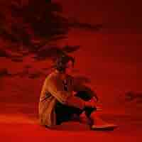

Lewis Capaldi:
Lewis Capaldi é um cantor e compositor escocês conhecido por sua voz potente e suas baladas emocionais. Sua carreira foi marcada por um sucesso meteórico com o lançamento do álbum Divinely Uninspired to a Hellish Extent, mas também por uma pausa para tratar da saúde mental e da Síndrome de Tourette.
